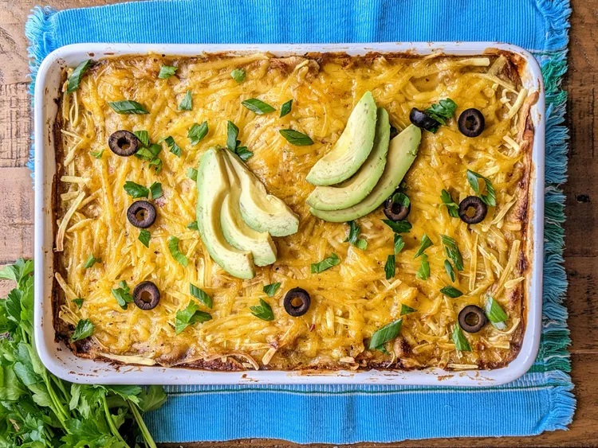

Enchilada Bake

Description
Casserole-style vegan enchiladas.
Ingredients
- 1 cup crushed tomatoes
- 2 cups cooked white rice
- 1 (15 ounce) can vegetarian refried beans
- ½ (16 ounce) can diced tomatoes and green chiles
- 8 ounces sliced seitan
- ½ (8 ounce) package shredded mozzarella-style vegan cheese
- 9 (6 inch) corn tortillas
- 1 (15 ounce) can green enchilada sauce
Steps
- Preheat the oven to 350 degrees F (175 degrees C).
- Pour crushed tomatoes into the bottom of a casserole dish.
Layer 1/3 of the rice, 1/3 of the beans, 1/3 of the diced tomatoes, 1/3 of the seitan, 1/3 of the vegan cheese,
1/3 of the tortillas, and 1/3 of the enchilada sauce into the dish, in that order.
Repeat with 2 more layers.
- Bake in the preheated oven until vegan cheese melts and casserole is heated through, about 45 minutes.